Davom etish uchun xaritadagi chorak nomini bosing.

Avval sinfni, keyin o‘rganmoqchi bo‘lgan fanni tanlang.
Davom etish uchun xaritadagi chorak nomini bosing.

Ikki holatni solishtiring. Qaysi biri xavfsiz?

Buyum kartochkasini bosing yoki pastda o‘zingiz tanigan buyumlarni belgilang.
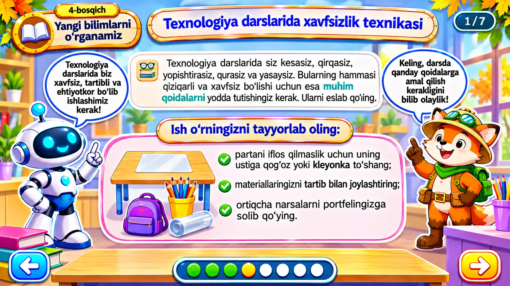
Ish o‘rnini tayyorlash qoidalarini bosib, bajarganlaringizni belgilang.

Har bir qoidani o‘qing va bosib belgilang.

Har bir ish qurolini bosib, u bilan tanishganingizni belgilang.

Har bir materialni bosib, u bilan tanishganingizni belgilang.
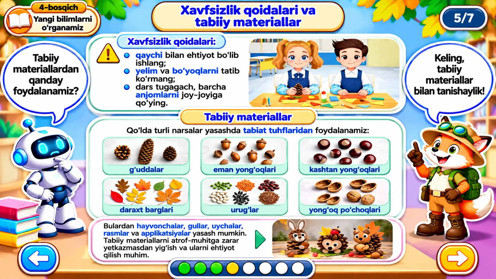
Xavfsizlik qoidalarini va tabiiy materiallarni bosib belgilang.
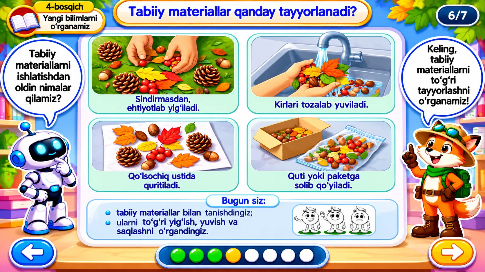
Tayyorlash bosqichlarini tartib bilan bosing, so‘ng o‘zingizni baholang.

Ish qurolining yonidagi doirachadan ushlab, mos vazifaga surib olib boring.

Mashq kartochkasini bosing va tulki bilan birga sanab bajaring!

Materialni ushlab, ish maydoniga surib olib boring. 1-qadam: g‘uddani tanlang.
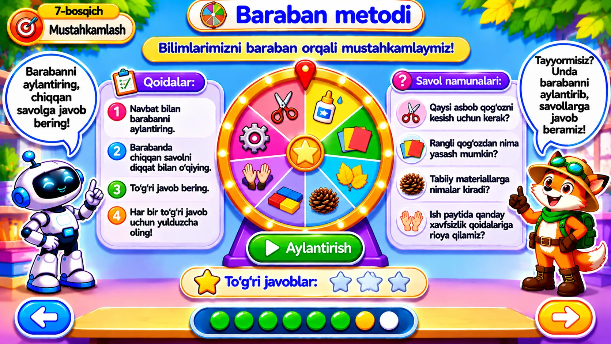
★ ★ ★«Aylantirish» tugmasini bosing yoki barabanning o‘zini bosing!
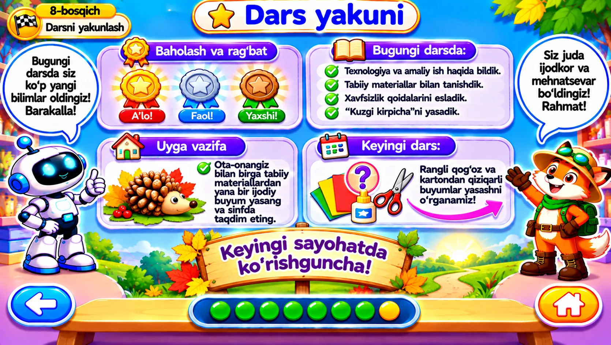
O‘zingizni baholang: medallardan birini tanlang. So‘ng bugun o‘rganganlaringizni belgilang.

Stol ustidagi qog‘oz buyumlarni bosib, ular bilan tanishing!
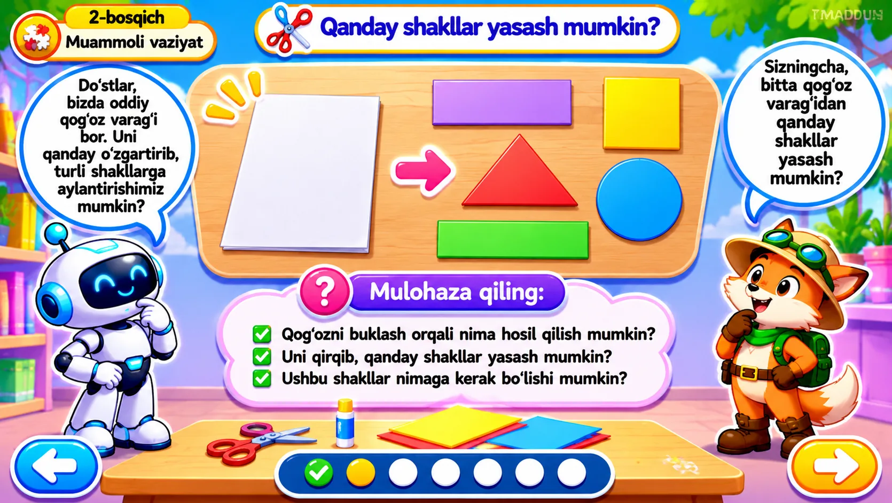
Shakllarni bosib nomini bilib oling. So‘ng savollar ustida o‘ylab, ularni belgilang.
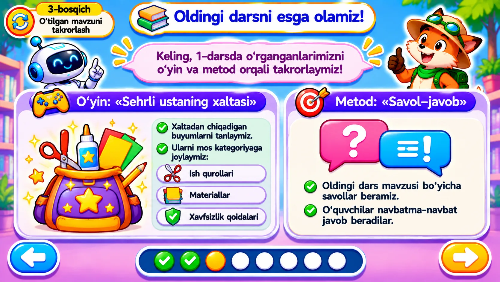
Sehrli xaltani bosing: chiqqan buyumni mos guruhga surib olib boring. «Savol–javob» uchun o‘ngdagi oynani bosing.

Yozuvlarni yoki qog‘ozning chetlarini bosing — tomon va burchaklar yonib ko‘rinadi. So‘ng «🎯 Topib ko‘r!» tugmasini bosing!
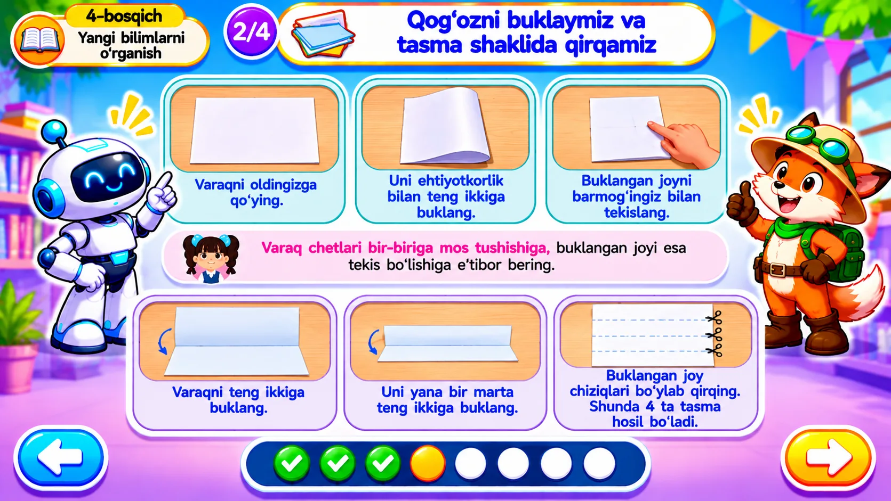
1 2 3 4 5 6Qadamlarni to‘g‘ri tartibda bosing: avval nima qilinadi? 1-qadamdan boshlang!
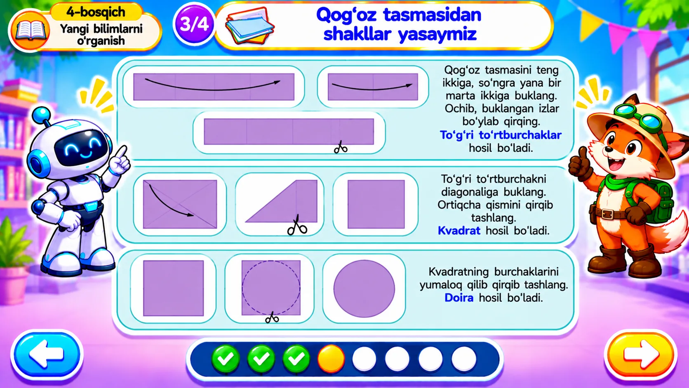
1 2 3 To‘g‘ri to‘rtburchak 1 2 3 Kvadrat 1 2 3 DoiraHar bir qatordagi rasmlarni chapdan o‘ngga, tartib bilan bosing va shakl yasang!
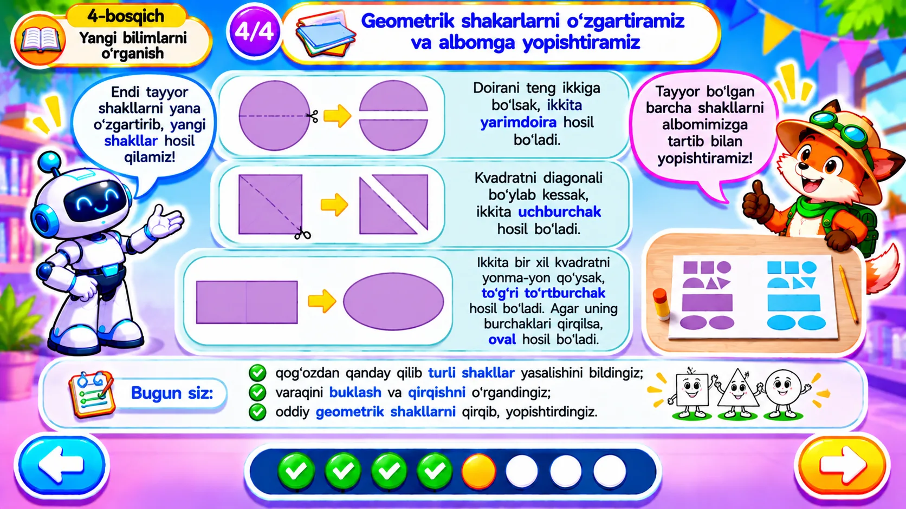
Yarimdoira Uchburchak OvalChapdagi shakllarni bosing — qaychi ularni qirqadi! So‘ng albomni ochib, shakllarni joyiga surib yopishtiring.
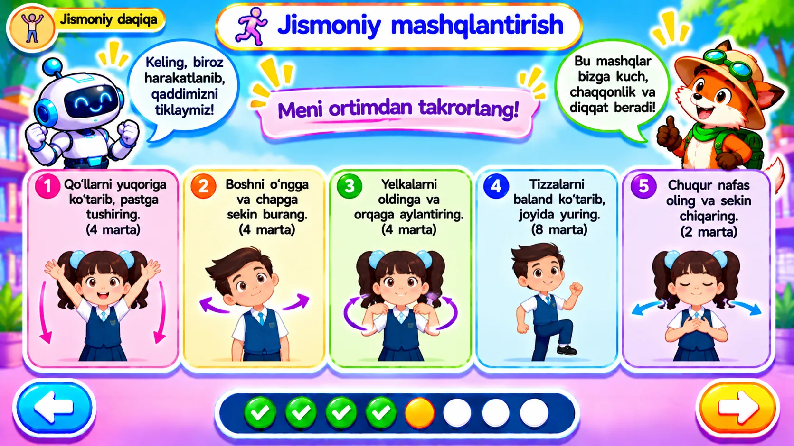
▶ Boshlash ✓ ▶ Boshlash ✓ ▶ Boshlash ✓ ▶ Boshlash ✓ ▶ Boshlash ✓Mashq kartochkasini bosing — sanoq boshlanadi! Yoki «Meni ortimdan takrorlang!» yozuvini bosib, hamma mashqni ketma-ket bajaring.
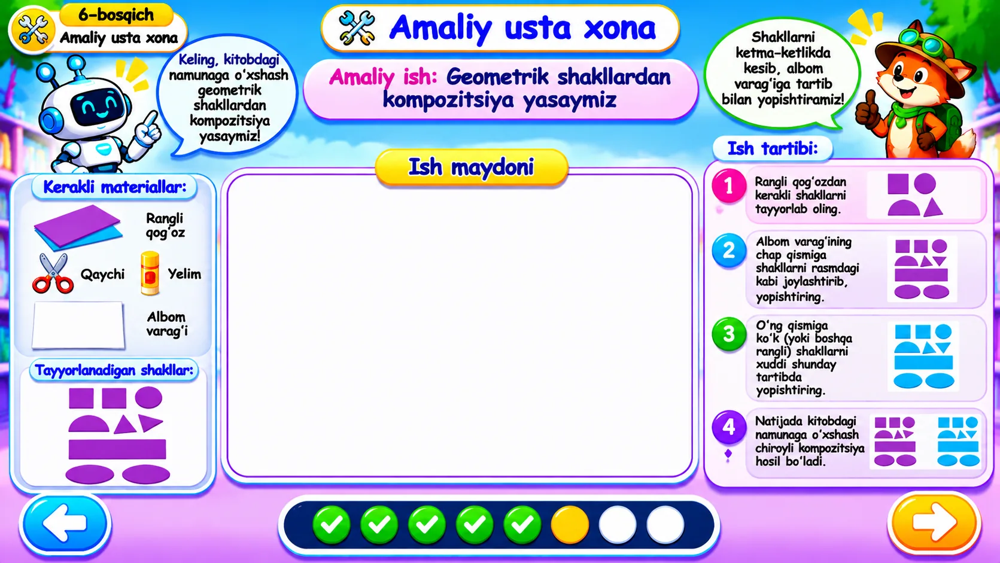
Chapdagi «Tayyorlanadigan shakllar»dan shaklni ish maydoniga surib olib boring. Chap tomonga binafsha, o‘ng tomonga ko‘k shakllarni namunadagi kabi joylang!
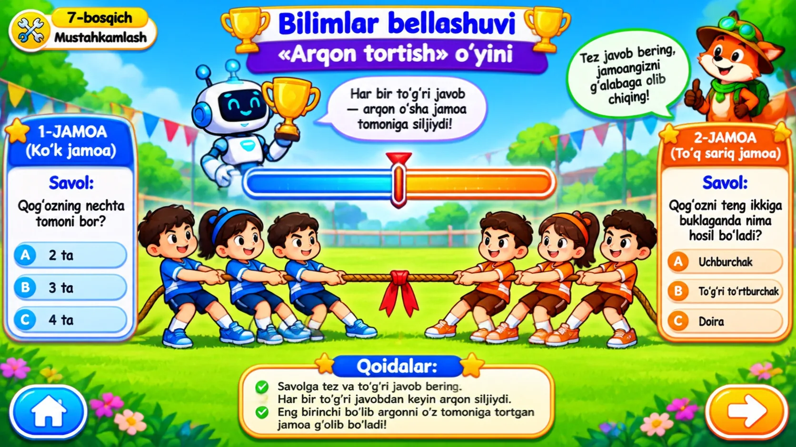
Ikki jamoa bir vaqtda o‘ynaydi: chapdagi savolga Ko‘k jamoa, o‘ngdagi savolga To‘q sariq jamoa javob beradi. To‘g‘ri javob — arqon sizning tomonga!
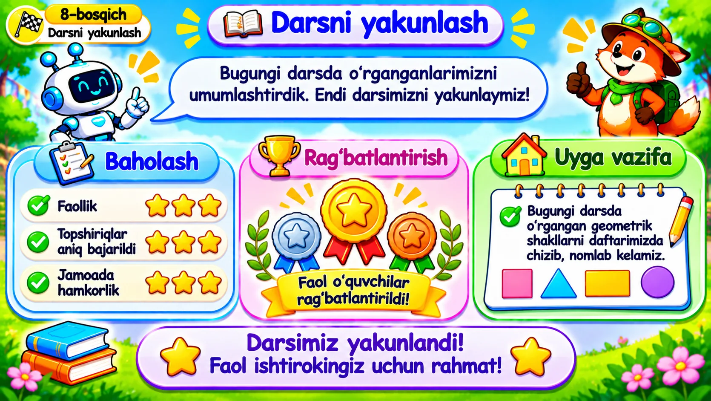
O‘zingizni baholang: har bir qatordagi yulduzchalarni bosing. So‘ng medal tanlang!
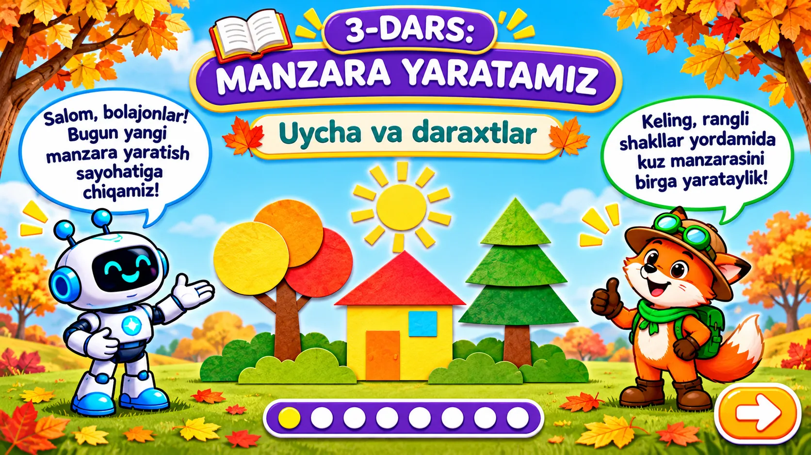
✓ ✓ ✓ ✓ ✓ ✓ ✓ ✓ ✓ ✓ ✓ ✓ ✓Manzaradagi shakllarni bosing — ular qanday geometrik shakldan yasalganini bilib olasiz! Keyin «🔎 Shakllarni izla!» o‘yinini o‘ynang.
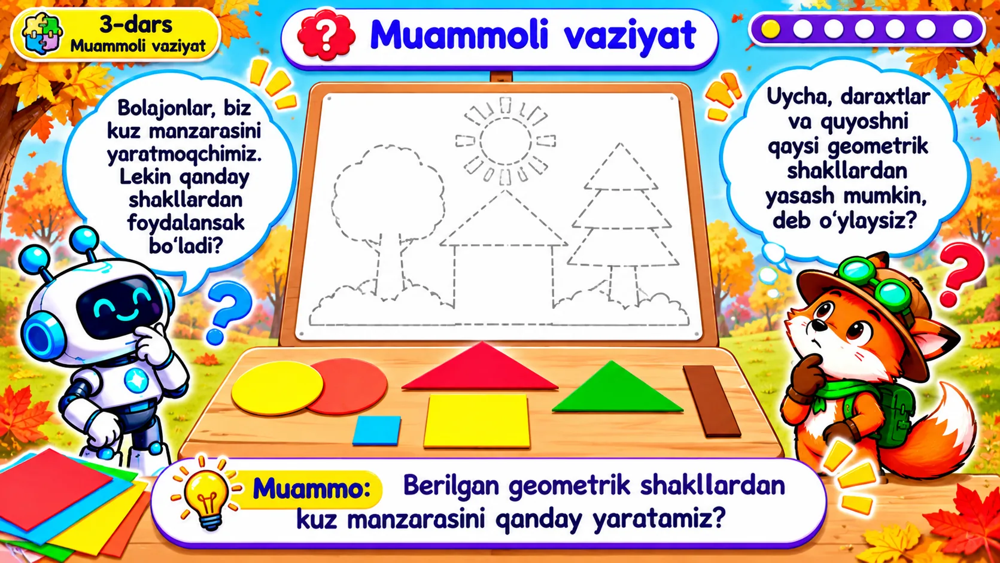
⭐ 0 / 8Stoldagi rangli shakllarni doskadagi chiziqli joylarga surib olib boring va kuz manzarasini yarating!
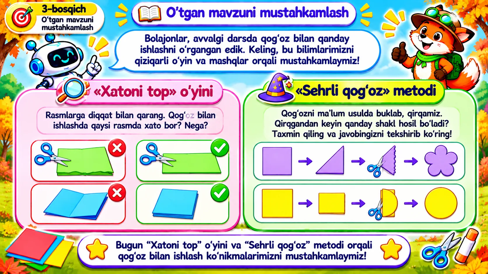
? ? ? ? ⭐ 0 / 2«Xatoni top»: har qatorda xato qilingan rasmni bosing. «Sehrli qog‘oz»: 🪄 belgisini bosib, qanday shakl chiqishini taxmin qiling!
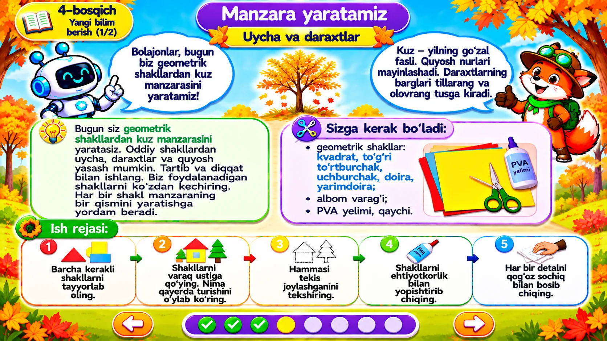
? 1 ? 2 ? 3 ? 4 ? 5«Ish rejasi»: raqamlar yashirilgan! Qadamlarni to‘g‘ri tartibda bosing — avval nima qilinadi? Materiallar ro‘yxatini ham belgilang.
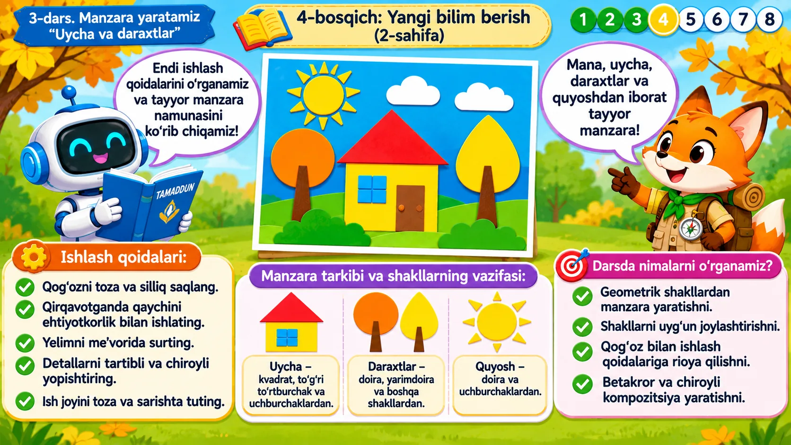
Pastdagi «Uycha», «Daraxtlar», «Quyosh» kartochkalarini bosing — namunada o‘sha qism yonadi! Ishlash qoidalarini ham belgilab chiqing.
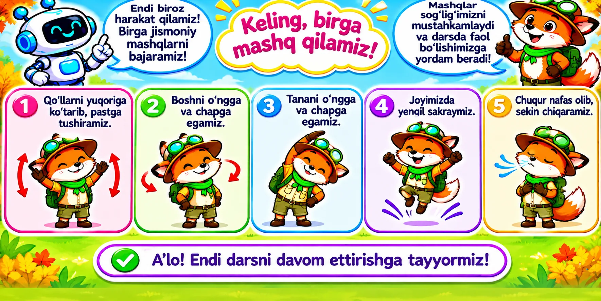
▶ Boshlash ✓ ▶ Boshlash ✓ ▶ Boshlash ✓ ▶ Boshlash ✓ ▶ Boshlash ✓Mashq kartochkasini bosing — sanoq boshlanadi! Yoki «Keling, birga mashq qilamiz!» bulutini bosib, hamma mashqni ketma-ket bajaring.
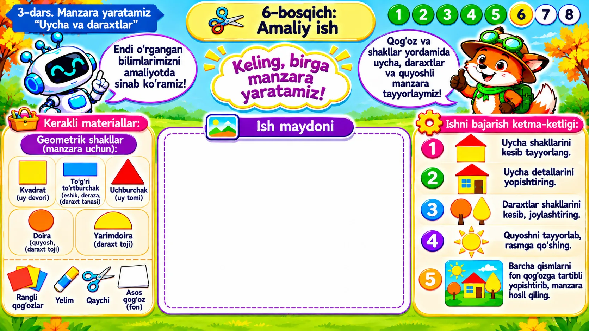
Chapdagi shakllarni ish maydoniga surib olib boring (yoki bosing) — uycha, daraxtlar va quyoshli manzara yarating! O‘ngdagi qadamlarni bossangiz, qayerga nima qo‘yilishi yonadi.
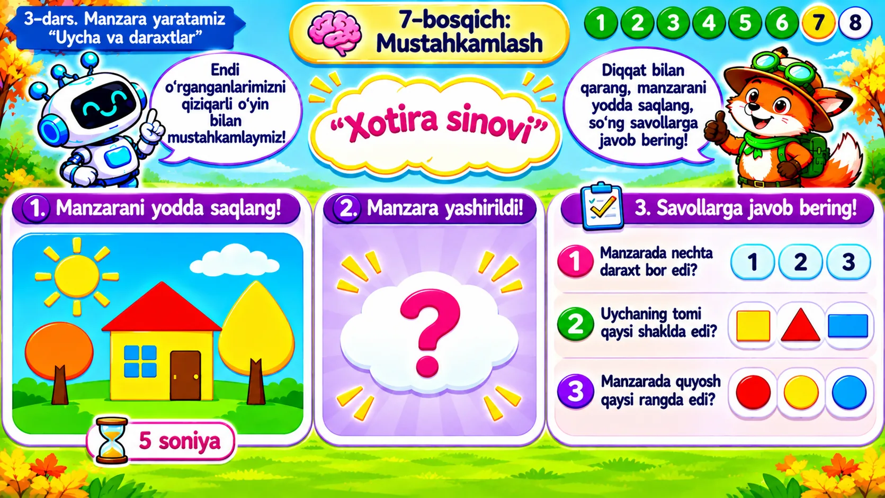
«▶ 5 soniya» tugmasini bosing va manzarani yodda saqlang! Manzara yashirilgach, o‘ngdagi 3 ta savolga javob bering.
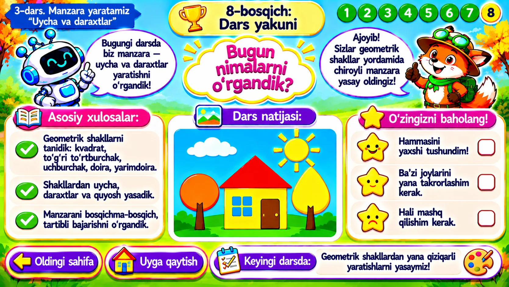
✔ ✔ ✔Xulosalarni va manzaradagi qismlarni bosib ko‘ring. «O‘zingizni baholang!» bo‘limida o‘zingizga mos javobni belgilang!
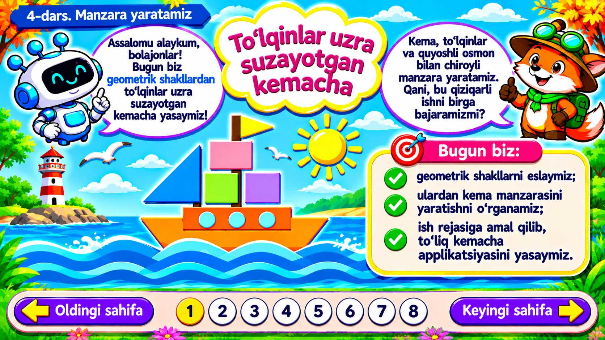
✓ ✓ ✓ ✓ ✓ ✓ ✓ ✓ ✓ ✓ ✓ ✓Kemachaning qismlarini bosing — ular qaysi geometrik shakldan yasalganini bilib olasiz! Keyin «🔎 Shakllarni izla!» o‘yinini o‘ynang.
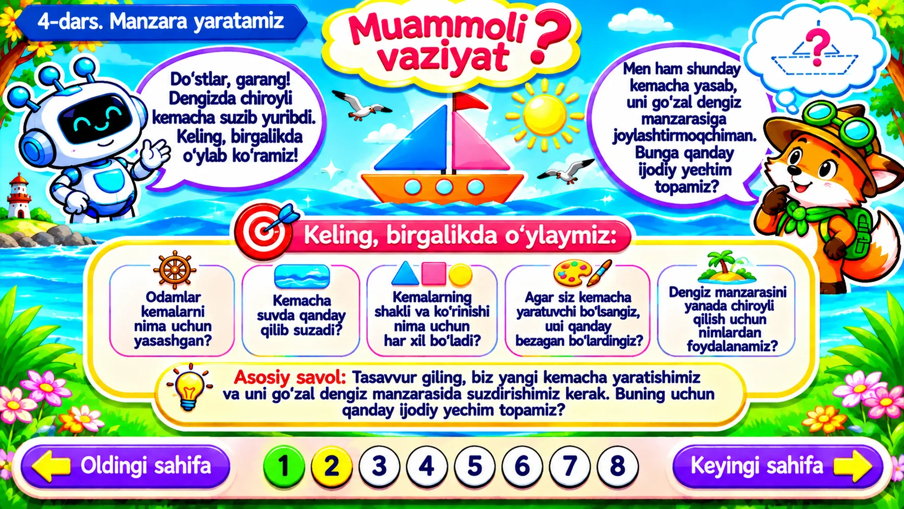
✓ ✓ ✓ ✓ ✓ ✓ ⭐ 0 / 6Savol kartochkalarini bosing va eng to‘g‘ri javobni tanlang! Oxirida «Asosiy savol»ga ijodiy yechim toping.
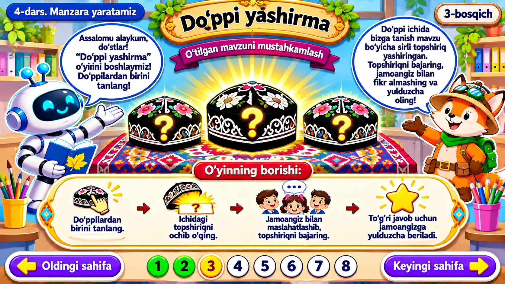
Ikki jamoa: ⛵ Kemachalar va 🌊 To‘lqinlar. Navbatdagi jamoa do‘ppilardan birini tanlaydi — ichidan topshiriq chiqadi. To‘g‘ri javob uchun ⭐ yulduzcha!